GREETING
인사말
프레쉬엔은 개발, 제조, 공급, 설치, 유지보수까지 전 과정을 유기적으로 수행하는 환경설비 전문기업을 지향합니다.
인사말
프레쉬엔은 환경설비의 개발, 제조, 공급, 설치, 유지보수까지 전 과정을 수행하는 체계를 바탕으로 고객 현장에 적합한 해법을 제시하고자 합니다. 공기 조화장치, 산업용 송풍기 및 배기장치, 기체 여과기, 조리실 후드, 자동제어시스템 등 제조 기반을 중심으로 실내 공기질 개선과 인프라 설비 분야까지 사업 범위를 넓혀 왔습니다.
책임 있는 제조개발과 제조 단계부터 품질과 공급 안정성을 함께 고려합니다.
현장 중심 사고설치 이후의 운영성, 유지관리, 성능 유지까지 함께 살핍니다.
장기적 관계 지향일회성 납품보다 장기적 신뢰와 후속 대응을 우선합니다.
CEO 이념
프레쉬엔은 변화하는 환경 기준과 고객 요구에 맞춰 더 효율적인 설비, 더 안정적인 공급, 더 책임 있는 유지관리 체계를 제공하는 회사를 목표로 합니다. 앞으로도 현장을 이해하는 기술력과 실행력을 바탕으로 환경설비 분야의 신뢰받는 파트너가 되겠습니다.
CEO 이념품질과 신뢰를 바탕으로 현장에 적합한 환경설비를 안정적으로 제공하고, 설치 이후 유지관리까지 책임지는 수행 체계를 강화합니다.
기업 방향현장을 이해하는 기술력과 실행력을 바탕으로 신뢰받는 환경설비 파트너가 되고자 합니다.
실행 원칙설치 이후까지 이어지는 대응으로 장기적 관계를 만들어 갑니다.
CEO 정 재 훈
